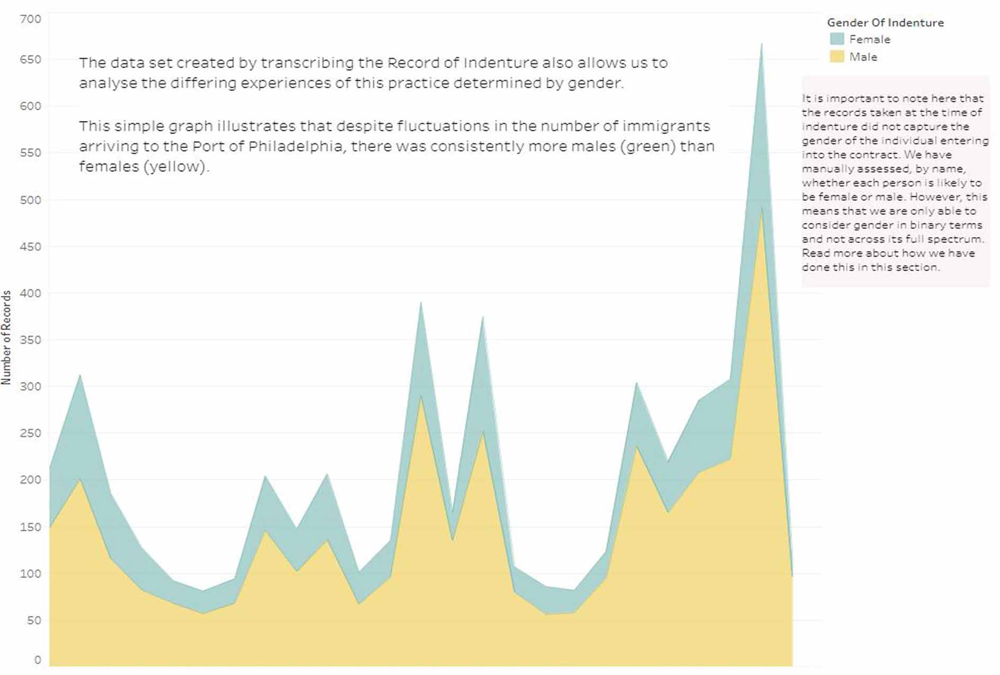

Introduction
Between October 3rd, 1771 and October 5th, 1773, over 5,000 contracts of indenture were registered in Philadelphia. Over a two year period, staff at the American Philosophical Society digitized and transcribed the bound volume of records creating a large dataset. This data can be visualized in many ways. Each map, graph, and diagram can be used in data stories that tell us about those who were indentured. This digital gallery offers a glimpse into what we have learned so far. Use the story map below to learn more about the project and as a guide to this digital exhibit.
The Project
What is Indentured Servitude?
The Journey to Indenture
Gendered Indenture
Length of Indenture
About this Data
What Do You Think?
This Project
What is Indentured Servitude?
The Journey to Indenture
Gendered Indenture
Length of Indenture

About this Data
What Do You Think?
Unpacking the Data
The sections in this gallery explore the concept of indentured servitude and how it was used to populate Colonial America. We examine different themes - distance, gender, and time – through interactive visualizations paired with stories of individuals found within the record. You can download the data for yourself in the "About this Data" section, where we also address larger concepts of historic open data and the importance of data transparency.